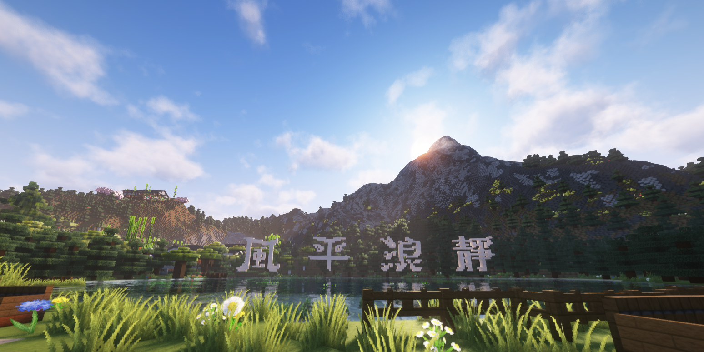
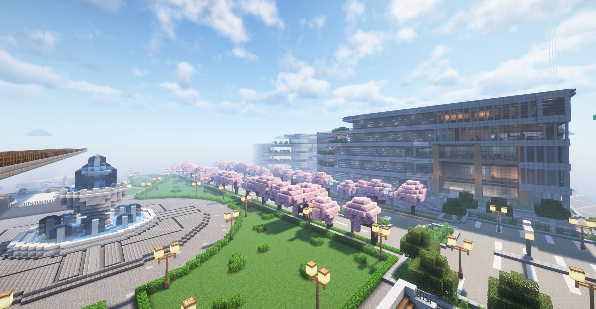
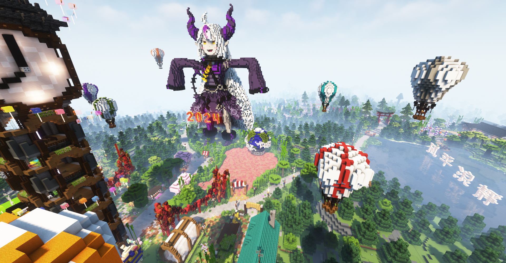
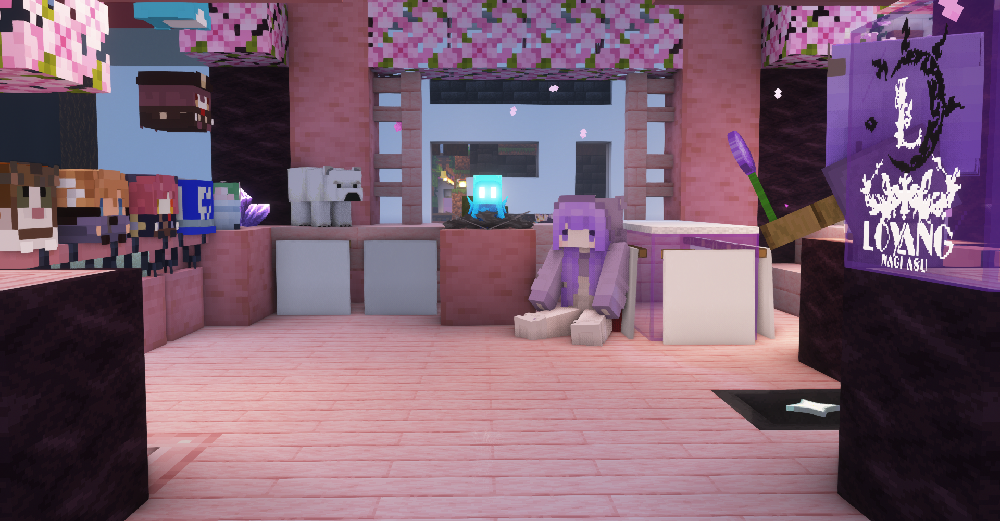
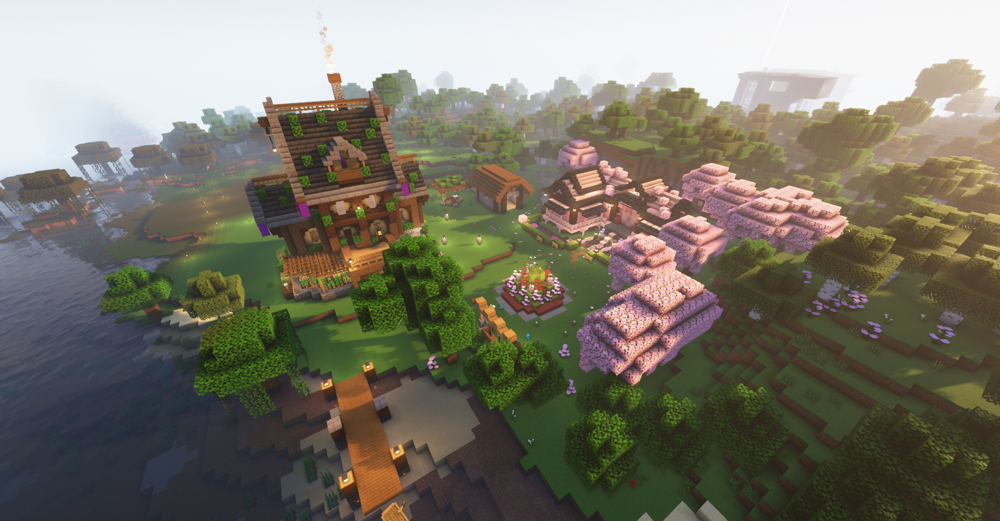

最原始的遊戲本質，忙碌之餘的放鬆體驗
這裡是一個專注於原味生存的伺服器。沒有複雜的模組，沒有破壞平衡的課金道具，只有最純粹的 Minecraft 體驗。我們致力於打造一個讓建築師、冒險家都能安心遊玩的避風港。

簡單，但不無聊的功能增強
支援將遊戲內畫好的地圖畫同步到各分流展示，打造獨一無二的畫廊與裝飾。
更多樣的社交動作（坐下、躺下），以及可收集的玩家頭顱裝飾。
輸入 /pvp 自由切換戰鬥狀態（資源服強制開啟），和平建築或熱血對戰由你決定。
擲骰子 /roll 決定命運，或是簡單好記的快捷選單。
在你的裝備或作品上簽名，留下你的傳說與品牌。
透過 /rtp 快速到達未知的荒野，展開新的冒險。
初次來到風平浪靜？這裡有你需要的一切。
我們在風平浪靜留下的回憶


